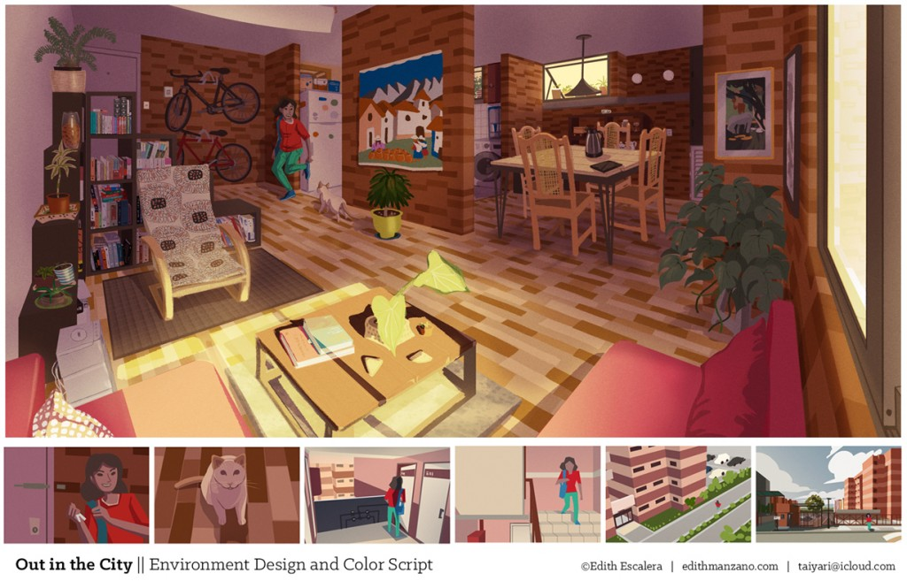
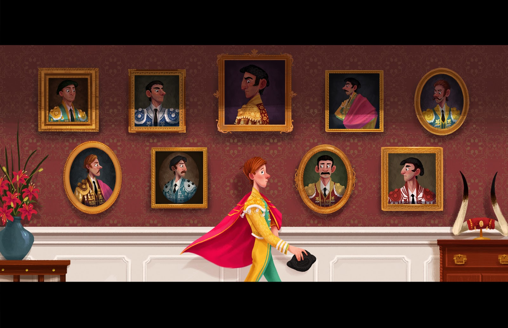
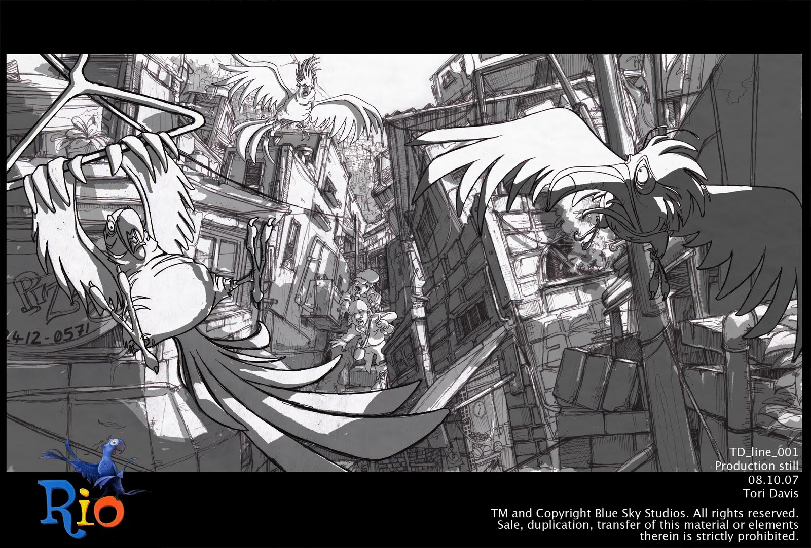

Visual development artists design and develop the look and feel of feature films, animations, videos, and other types of productions. These artists may also work in advertising, publishing, marketing, or public relations. In the animation industry, visual development artists imagine and propose ideas for what the animated world should look like based on the story, characters, and action. Visual development artists also work with character emotions to help assist with the storytelling aspect of the animated production.

Visual development artists work with creative departments to develop backgrounds, colors, lighting, environments, and props for films, animated pieces and more. They use animation, illustration, drawing, and design skills to create visuals that convey ideas about how they envision the look of the piece. Visual development artists typically work in 2D or 3D and they use programs such as Photoshop and Maya. Visual development artists work in animation studios, film and video production studios, game design and development firms, and web design, graphic design and advertising and public relations firms. Visual development artists work in the rapidly growing mobile technology field as well.

Salaries for visual development artists are based on a variety of factors such as education, experience, benefits, geographic location, industry, company, status (contractor, salaried employee), and more. According to employment and salary reporting websites ranging from Glassdoor to SimplyHired, average national salaries for visual development artist range from $44,020 per year up to $109,724 per year. Salaries for visual development artists working at major studios such as DreamWorks Animation, Disney Interactive, and Blue Sky Studios tend to fall on the higher end of the pay scale.
It is important to note that many visual development artists are self-employed. These individuals may make quite a bit more or less than salaried employees based on the same factors.
The art and entertainment industry is one of the most competitive industries in the world. Because competition is so strong, most aspiring visual development artists opt for a bachelor’s or master’s degree in fine art, illustration, painting, animation, visual arts and communications, or other related field. These individual’s will also complete as many internships as possible or work in another support position to gain the valuable experience that just about every major employer requires. A bachelor’s degree and experience through an internship or other support position will help you obtain an entry-level position. For intermediate positions, a top studio or other employer may require a minimum of two years’ professional experience, plus a bachelor’s degree or higher. For upper level positions, employers may require an advanced degree, plus three to five years’ professional experience in the industry. For all levels, advanced knowledge of the latest industry software is a must.

The employment outlook for visual development artists varies by industry. For example, employment growth in the animation industry is projected to grow six percent for the 2012-2022 decade, while employment for art and design workers is projected to grow five percent. Employment in the film and video industry (overall) is projected to grow 11 percent for the 2012-2022 decade, while public relations and advertising (overall) is projected to grow 12 to 13 percent. Visual development artists with advanced computer and software skills will continue to dominate the field as the use of images and backgrounds that are more detailed increases—across all industries.